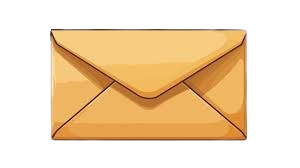

Happiesttttttt Birthday to my favvvvvvvvvvvvvvvvvvv personnnnnnnnnnnnn!
Ms. Ashwithaaa!!
You are the bestesssssssssttttt person i've met in my life.
You're the one who made my college life sooo sooo sooo much special.
Neetho maatladutunna , time spend chesina asala time ee telidhu .
We end up talking random shit😂
My one and only listener , who listens to all my bs without juding me.
The unexpected morning meets at the bus stop or signal , the talks , the walks,
the way , that closeness eppatiki marchiponu and always eppatiki ilage undali ani korukuntunna.
Lit siggu lekunda antha share chesukunta neetho , the way we have little arguments , shipping each other,
my jealousy , naaku kopam tepiyyadam , waiting for each other near signal , that rainy day stunt ,
godava day , chance dorikinappudu nee pakkana kurchodaniki chese dhairyam , the never ending byee's like
4-5 times venakki tirigi chudatam , that calls , my news channel ur mottham cheptav annitigurinchi itla
ayyindi ani ,mana gurinchi rumours 😂, sharing secrets of others , naaku noti dhoola valla edhokati leak
cheyyadam or ninnu emaina aneyyadam , cheptunna u have too much orpu , little pranks u make on me , rare and random video calls , the cutttttesssstttt personn urr ashwitha !All these things and still something feels incomplete that is missing ur presence. Like masthu masthu miss aytunna kalvali ani chaaala aashaga undhi hope we meet soon .Naaku ivi saripovu ash inka masthu memorable days spend cheyyali neetho .You really
really really have a specialll place in my heart! Ee madhya change kanipinchochu cause sodhi game aaduthu
unna , but still even the smallest conversation we have makes me happy.
Especially your voice messages are my favvv. This bond is beyond friendship something which is not named.
And that smile when i hear your name . I Like You A lottttttttttttttt ashwitha (gud way).
Inka type cheste ee page saripodhu. Soo yeah this is so short ashwitha i lit can't describe about you in
words. U matter and mean a lottttt to me . Konni sarlu hurt chesina sorry for that.
Ur the best and will always remain my favourite . Inka chaala cheppali but maatalu raatale .
Always bee Happy ashwitha . You deserve all the happiness of the world. Stay strong and take care of ur
health raa! Miss u a lot and luv u (good way).
Go to Gallery